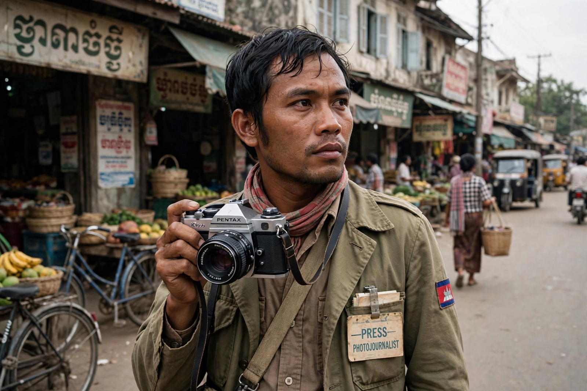

| Dith Pran | |
|---|---|
| Born | 27 September 1942, Siem Reap, Cambodia |
| Died | 30 March 2008 (aged 65), New Brunswick, New Jersey, US |
| Occupation | Photojournalist, translator, refugee advocate |
| Known for | Surviving the Cambodian genocide; subject of The Killing Fields |

Dith Pran (27 September 1942 – 30 March 2008) was a Cambodian photojournalist and survivor of the Cambodian genocide under the Khmer Rouge. He is best known as the subject of the 1984 film The Killing Fields, which dramatised his partnership with New York Times reporter Sydney Schanberg and his escape from Cambodia.
Born in Siem Reap near Angkor Wat, Pran learned English and French and worked as a translator and guide. In the early 1970s he became a fixer and photographer for foreign journalists covering the Cambodian Civil War, most closely with Schanberg.
When the Khmer Rouge captured Phnom Penh in April 1975, Schanberg and other foreigners were evacuated, but Pran was forced out of the French embassy compound and sent to labour camps in the countryside. For more than four years he survived starvation and forced labour in Democratic Kampuchea, concealing his education and language skills. After the Vietnamese invasion he escaped across the border into Thailand in October 1979, passing through the killing fields whose name he is credited with coining.
Pran emigrated to the United States in 1980 and joined The New York Times as a photographer. He founded the Dith Pran Holocaust Awareness Project to educate Americans about the Cambodian genocide. He died of pancreatic cancer in 2008.